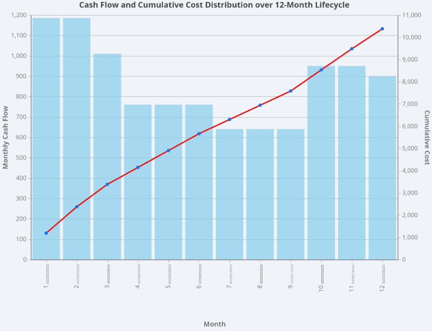

Project Cost Estimation & Baseline Report
This document aims to provide a transparent overview of the cost structure and financial timeline for the development of the Elder Care Robot and its companion mobile application. The cost estimation process is based on the proposed team structure and technical requirements, governed by the following assumptions:
In the cost estimation table, the total budget is structured around a Work Breakdown Structure (WBS) consisting of seven main phases. Team members are allocated in a matrix structure across various activities. Trainees are exclusively present in the first six months, and the marketing team is allocated only in the final three months to align with project financial constraints and requirements.
| ID | Task Name (WBS) | Duration | Labor Cost (Tomans) | Materials/Other (Tomans) | Total Cost (Tomans) |
|---|---|---|---|---|---|
| 0 | Project Management | 12 months | 1,200,000,000 | 50,000,000 | 1,250,000,000 |
| 1 | AI Development | 9 months | 2,400,000,000 | 150,000,000 | 2,550,000,000 |
| 2 | Hardware Development | 9 months | 720,000,000 | 800,000,000 | 1,520,000,000 |
| 3 | Software Development | 9 months | 2,400,000,000 | 100,000,000 | 2,500,000,000 |
| 4 | HW & SW Integration | 1.5 months | 840,000,000 | 50,000,000 | 890,000,000 |
| 5 | System Testing | 1.5 months | 840,000,000 | 50,000,000 | 890,000,000 |
| 6 | Pre-Launch Marketing | 3 months | 480,000,000 | 300,000,000 | 780,000,000 |
| - | Project Total | 12 months | 8,880,000,000 | 1,500,000,000 | 10,380,000,000 |
Project Cost Estimation & Baseline Report
Project cash flow is distributed across a 12-month schedule. The logic governing this distribution is as follows:
| WBS Component | Mo 1 | Mo 2 | Mo 3 | Mo 4 | Mo 5 | Mo 6 | Mo 7 | Mo 8 | Mo 9 | Mo 10 | Mo 11 | Mo 12 |
|---|---|---|---|---|---|---|---|---|---|---|---|---|
| Project Management | 125 | 125 | 125 | 125 | 125 | 125 | 85 | 85 | 85 | 85 | 80 | 80 |
| AI Development | 305 | 305 | 305 | 305 | 305 | 305 | 240 | 240 | 240 | 0 | 0 | 0 |
| Hardware Dev. | 280 | 280 | 280 | 280 | 80 | 80 | 80 | 80 | 80 | 0 | 0 | 0 |
| Software Dev. | 300 | 290 | 290 | 290 | 290 | 290 | 250 | 250 | 250 | 0 | 0 | 0 |
| System Integration | 0 | 0 | 0 | 0 | 0 | 0 | 0 | 0 | 0 | 610 | 280 | 0 |
| Testing Phase | 0 | 0 | 0 | 0 | 0 | 0 | 0 | 0 | 0 | 0 | 280 | 610 |
| Marketing | 0 | 0 | 0 | 0 | 0 | 0 | 0 | 0 | 0 | 210 | 260 | 310 |
| Monthly Total | 1,010 | 1,000 | 1,000 | 1,000 | 800 | 800 | 655 | 655 | 655 | 905 | 900 | 1,000 |
| Cumulative Cost | 1,010 | 2,010 | 3,010 | 4,010 | 4,810 | 5,610 | 6,265 | 6,920 | 7,575 | 8,480 | 9,380 | 10,380 |
* All numerical figures in the table above are in Millions of Tomans.

Project Cost Estimation & Baseline Report
Over 85% of the total budget (approx. 8.88 Billion Tomans) is dedicated to recruiting, training, and retaining a specialized technical team. Utilizing trainees in the first 6 months slightly increases immediate costs but creates an internal talent pipeline for future projects.
Addressing the lack of an internal hardware team through partial outsourcing (50% capacity contractors) is a highly efficient mitigation strategy. It prevents the heavy overhead of permanent hires while sufficiently lowering technical delivery risks.
Concentrating the marketing budget heavily in the final trimester creates a robust demand generation engine (Lead Gen) precisely when the product is ready to ship, thereby drastically accelerating the projected Return on Investment (ROI).
The total estimated budget required for the successful completion of this 12-month project is 10.38 Billion Tomans. Considering the immense technical complexity of this product—which demands simultaneous physical manufacturing, AI model training, and cross-platform mobile app development—this estimate is highly reasonable and strongly justified.
Investing in this venture presents exceptional commercialization potential. The "smart elder care" market is currently an untapped niche locally. A product that actively ensures the physical safety of the elderly while providing profound psychological peace of mind for their families possesses extreme intrinsic value. The Cost Baseline reveals that while initial liquidity requirements are high during the hardware procurement phase, the cash burn rate stabilizes significantly in the second half of the project. We recommend that executive management formally approve this budget and authorize the Project Charter to commence operations immediately.